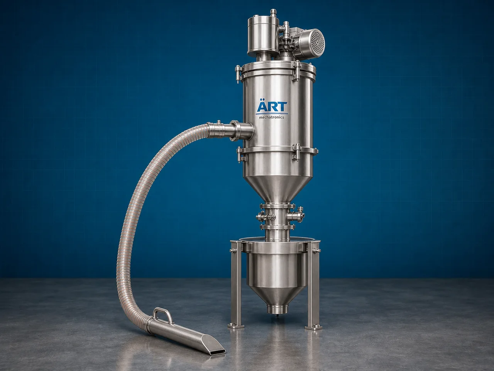

Vacuum Conveyor Machine (Industrial Vacuum Powder & Bulk Material Conveying System)
A Vacuum Conveyor Machine, also known as a Vacuum Conveying System or Industrial Vacuum Powder Conveyor, is an advanced industrial material handling equipment designed for dust-free, hygienic, enclosed, and automated transportation of powders, granules, pellets, tablets, food ingredients, chemicals, and bulk materials using vacuum suction technology through sealed pipelines.

About the Vacuum Conveyor
Vacuum conveying systems are widely used for:
- Hygienic powder conveying
- Dust-free material transfer
- Automated bulk material handling
- Contamination-free conveying
- Multi-point material feeding
- Long-distance material transportation
The machine improves:
- Production automation
- Workplace cleanliness
- Product hygiene and safety
- Material transfer efficiency
- Labor reduction
- Factory space optimization
Unlike conventional mechanical conveyors, vacuum conveyors use:
- Vacuum pumps or blowers
- Negative pressure conveying systems
- Enclosed pipelines
- Material receivers and filters
to move materials safely and efficiently without dust leakage or contamination.
Vacuum conveyor machines are widely used in industries such as:
Food processing industries
Pharmaceutical industries
Chemical industries
Nutraceutical industries
Dairy industries
Cosmetic industries
Plastic industries
Powder handling plants
where clean, enclosed, and contamination-free material conveying is critical.
The machine is highly suitable for:
- Powder conveying
- Flour transfer
- Spice handling
- Tablet feeding
- Granule transportation
- Hygienic ingredient handling
ART Mechatronics offers high-performance vacuum conveyor machines, engineered for continuous industrial operation, hygienic enclosed conveying, low maintenance, and reliable long-term performance.
Working Principle of Vacuum Conveyor Machine
Powders, granules, pellets, or bulk materials are loaded into feed hopper or suction pickup point
Vacuum pump or blower creates negative pressure inside conveying pipeline
Material gets sucked into air stream through vacuum suction
Machine conveys:
- Powders
- Flour
- Spices
- Granules
- Pellets
- Tablets
- Food ingredients through sealed hygienic pipelines.
Enclosed system prevents: Dust leakage Product contamination Material wastage Airborne pollution
Filter receiver or cyclone separator separates conveyed material from conveying air
Material discharged automatically into: Mixers Packaging machines Storage bins Process equipment
Types of Vacuum Conveyor Machines
- 1. Powder Vacuum Conveyor
Designed for: ✔ Fine powder and flour conveying applications
- 2. Granule Vacuum Conveyor
Suitable for: ✔ Granules, pellets, and seed conveying systems
- 3. Pharmaceutical Vacuum Conveyor
Used for: ✔ Hygienic tablet and capsule ingredient transfer systems
- 4. Food Grade Vacuum Conveyor
Designed for: ✔ Hygienic food ingredient handling applications
- 5. Centralized Vacuum Conveying System
Suitable for: ✔ Multi-machine automated conveying plants
- 6. Heavy Duty Industrial Vacuum Conveyor
Designed for: ✔ Continuous industrial bulk material handling operations
Industries Using Vacuum Conveyor Machine
🍃 Food Processing Industry Flour, spice, and ingredient conveying systems 💊 Pharmaceutical Industry Hygienic powder and tablet handling systems ⚗️ Chemical Industry Chemical powder conveying applications 🥛 Dairy Industry Milk powder and ingredient handling systems 🌾 Grain Processing Industry Grain and seed transfer systems 🧴 Cosmetic Industry Cosmetic powder conveying systems 🧴 Plastic Industry Plastic pellet transfer systems 🌱 Nutraceutical Industry Supplement powder handling systems
Features & Advantages
- Fully enclosed dust-free conveying system
- Hygienic and contamination-free material transfer
- Ideal for powders and fine materials
- Continuous industrial operation
- Reduces manual handling and labor costs
- Flexible pipeline routing capability
- Compact and space-saving installation
- Low maintenance and energy-efficient design
- Easy integration with automated production systems
Technical Highlights
Conveying Type: Vacuum suction conveying Pneumatic vacuum transfer Construction: Stainless Steel / Mild Steel Conveyor Components: Vacuum pump Blower Filter receiver Cyclone separator Suction hopper Conveying Arrangement: Horizontal Vertical Multi-directional routing Automation: Semi-automatic Fully automatic PLC-based systems
Turnkey Vacuum Conveying Solutions
ART Mechatronics offers: Complete vacuum conveying systems Hygienic powder handling solutions Centralized bulk material transfer systems Food and pharma automation integration Installation & commissioning After-sales service & AMC
Why Choose Art Mechatronics
Expertise in hygienic industrial material handling systems Customized vacuum conveying solutions for multiple industries High-performance and durable industrial construction Energy-efficient and reliable conveying systems Proven industrial performance across sectors
Applications
Food Processing Plants Pharmaceutical Manufacturing Units Chemical Industries Dairy Plants Cosmetic Manufacturing Units Nutraceutical Industries
Industries that use the Vacuum Conveyor
Related Conveying & Handling machines
Get pricing & specs for the Vacuum Conveyor
Share the product, target capacity, current process and plant location. These details help our engineers discuss the right machine or line configuration.
One partner, from design to start-up
ART Mechatronics designs, manufactures, installs and commissions your Vacuum Conveyor solution with regional presence in India, UAE and Thailand.